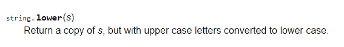
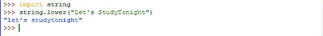

在 Python 中使用模块和相关函数
原文：https://www.studytonight.com/python/modules-and-functions
在之前的教程中，我们学习了数学模块。我们还检查了它的一些功能，如sin、log等。，并且也学会了如何使用它们。现在就像数学模块一样，python 库中还有其他几个模块可以直接在任何 python 程序中使用。其中一些模块非常重要，没有这些模块，程序员根本无法制作任何现实生活中的应用。
在本课中，我们将重温模块及其功能，并尝试更好地理解它们。
功能位于模块内部
将模块视为另一段 python 代码，保存在 python 包中的某个地方，您可以在任何其他(或您的)python 代码文件中重用模块文件中的代码。现在试着回忆一下我们导入math模块后做了什么。我们测试了在math模块中定义的一些功能，如math.floor(8.4)、math.sin(3.14159)等。
注:pow(5,2)``math.floor(8.4)``sin(3.14159)都是调用函数的例子。
要了解我们如何使用import语句来导入外部模块，如数学模块，请检查实时示例，
如果，我们上面写的只是调用和使用这些函数的一种方式。执行这些复杂数学运算的实际逻辑(代码)存储在哪里？即计算提供值的功率、楼层或正弦。所有这些(代码或逻辑)都位于模块文件中，称为功能定义。函数定义设置了规则，即函数如何解释所提供的输入，对其执行一些操作，以及作为输出或结果返回什么。
事实上，是函数定义本身决定了函数的输入和输出的类型和数量(输出总是一个，但输入可以是多个)。这些输入有一个官方术语，它们被称为参数。
参数:定义接受的输入类型的结构，同时定义函数。
参数:调用/使用函数时作为输入插入的实际值。
假设我们已经创建了一个模块文件study now . py(.py表示它是一个 python 代码文件；没错。你也可以自己创建一个模块文件，毕竟只是 python 代码)。在模块文件中，我们定义了一个可以求解二次方程ax<sup>2</sup> + bx + c = 0的函数。让函数名为qSolver(a, b, c)。
使用这个函数只需要提供a、b、c的值，即方程的系数值，函数就会打印出这两个解是否真实，是什么。那么，让我们看看如何导入模块并使用函数。
步骤 1: 首先导入模块。
>>> import StudyTonight
第二步:接下来用适当的参数调用函数，例如2x<sup>2</sup>-6x+3=0、a=2、b=-6和c=3。因此我们会打电话给，
>>> qSolver(2, -6, 3)
您不必在 IDLE 上尝试此功能，因为这不起作用。为什么呢？因为我们实际上没有在你的本地系统(笔记本/电脑)中创建任何名为【StudyTonight】的模块。这只是为了向您解释模块和函数实际上是如何工作的，以及我们如何使用自己定义的函数创建自定义模块。为了从模块中调用每个函数，您必须遵循相同的步骤。
python 已经有很多可用的模块了。当您安装 python 时，一些可能已经安装在您的系统中，而另一些可以从互联网轻松下载。这完全取决于你需要什么。
如何使用模块中定义的函数
使用模块中定义的函数时，您应该知道以下事项:
- 您必须知道哪个模块包含该功能。
Check if it's already in your system. If it is, then all good, otherwise go ahead and download it from the internet.
(注意:可以通过在 IDLE 中导入该模块进行检查。错误意味着它不在那里。)
接下来，确定您想要使用的函数的名称。为此，您可以参考 python 的文档。
- 参考文档检查它需要的参数数量，它们的含义和顺序。
- 接下来，调用函数。 <模块-名称> 是模块的名称， <功能-名称> 是功能的名称和
**<自变量-2 > ...是函数的参数。
>>> <module-name>.<function-name>(<argument-1>, <argument-2>, ...)
请注意，参数的数量取决于我们使用的函数。在某些情况下，函数可能不接受任何参数。这完全取决于您调用的是哪个函数，因此在使用任何函数之前，您必须查看文档以查看函数定义。上面调用的函数可能返回值，也可能不返回值(函数的输出)。在某些情况下，我们经常需要存储输出以备将来使用。我们通过将它存储在一个变量中来做到这一点，我们已经在上一节教程中学习过了。
>>> variable-name = <module-name>.<function-name>(<argument-1>, <argument-2>, ...)
这只有在函数返回任何值(输出)时才有意义。此外，函数只能返回一个输出值，或者根本不返回。
让我们用我们到目前为止所理解的，使用一个在string模块中定义的函数lower()。
附加主题(什么是字符串？)
String 只是一个用来指代像"Studytonight"这样的单词或者像"Studytonight is a good website"这样的句子的术语。
它们必须用单引号或双引号('...'括起来/ "...").在上一章中，我们已经解释了如何将它们存储在变量中。存储字符串的变量叫做字符串变量。
现在string模块不同于上面解释的字符串。这只是一个名为字符串的模块，定义了函数对字符串变量执行各种操作。
因此，string模块由一些处理字符串操作的函数组成。在下面的例子中，我们将使用lower()，它用于将字符串的每个字符转换为小写。
- 我们已经知道
string是由功能lower()组成的库/模块。 - 导入
string模块检查是否可用。因为它是一个基本模块，所以它很可能会在那里。 - 查看文档，在模块页面找到功能
lower()。它会给你使用它所需的信息。

- 它只有一个字符串参数。因此，创建一个字符串变量，其值为“让我们今晚研究一下”。
- 接下来调用函数，
>>> string_variable = "Let's StudyTonight"
>>> string.lower(string_variable)
或者，如果你想直接一点，不要浪费内存去保存一个变量，就像这样做，
>>> string.lower("Let's StudyTonight")
像我们上面做的那样调用一个函数只会在我们点击回车时打印结果。就像这样，

如您所见，返回值将所有大写字母(大写字母)转换为小写，即 L 到 l 、 S 到 s 和 T 到 t 。如果您使用了一个变量，请记住，使用这样的函数不会修改原始变量的值。因此，即使在使用该函数后，string_variable的值仍将保持不变。因此，如果您愿意，可以将修改后的值保存在其他变量中，甚至保存在同一个变量本身中，例如:
>>> string_variable = string.lower(string_variable)
该语句完全有效，因为 python 将从右向左编译所有内容，即它将首先使用string.lower()获取修改后的字符串，然后使用=(等于)运算符将输出值分配给string_variable变量。